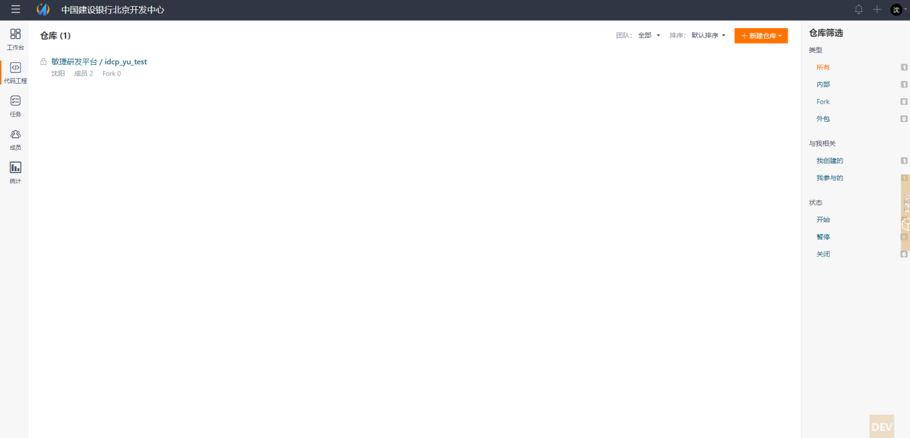
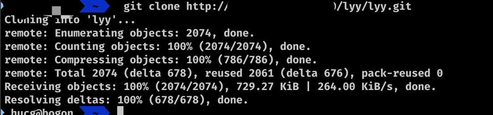
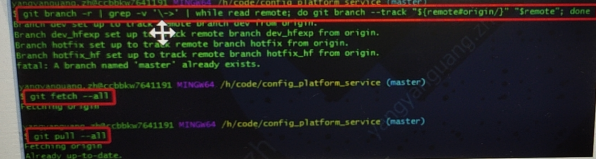
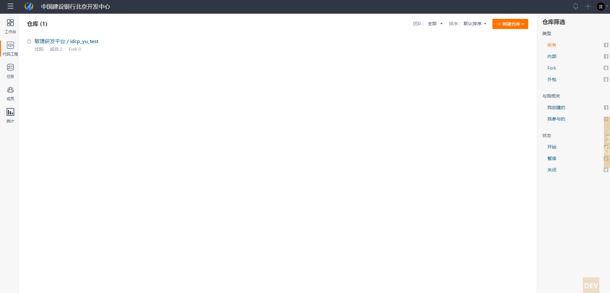

git push -u origin master仓库的关联配置库变更
点击左侧菜单【代码工程】,选择需要变更的仓库，点击【管理】下菜单【基础设置】。选择关联配置库。点击【保存】按钮进行保存。
操作界面如图：

至此Gerrit仓库迁移Git完成。
git clone 仓库地址
git branch -r | grep -v '\->' | while read remote; do git branch --track “$remote#origin/}” “$remote”; done git fetch –all git pull –all
git push REMOTE '*:*' git push REMOTE --all git push --all origin提交代码到代码托管模块
git remote set-url origin 仓库地址
git push -u origin master仓库的关联配置库变更
点击左侧菜单【代码工程】,选择需要变更的仓库，点击【管理】下菜单【基础设置】。选择关联配置库。点击【保存】按钮进行保存。
操作界面如图：

至此Gerrit仓库迁移Git完成。